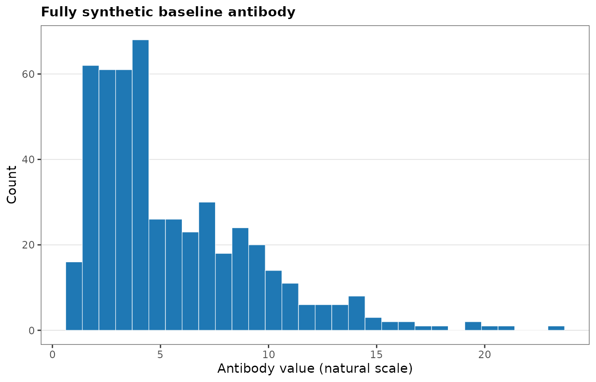
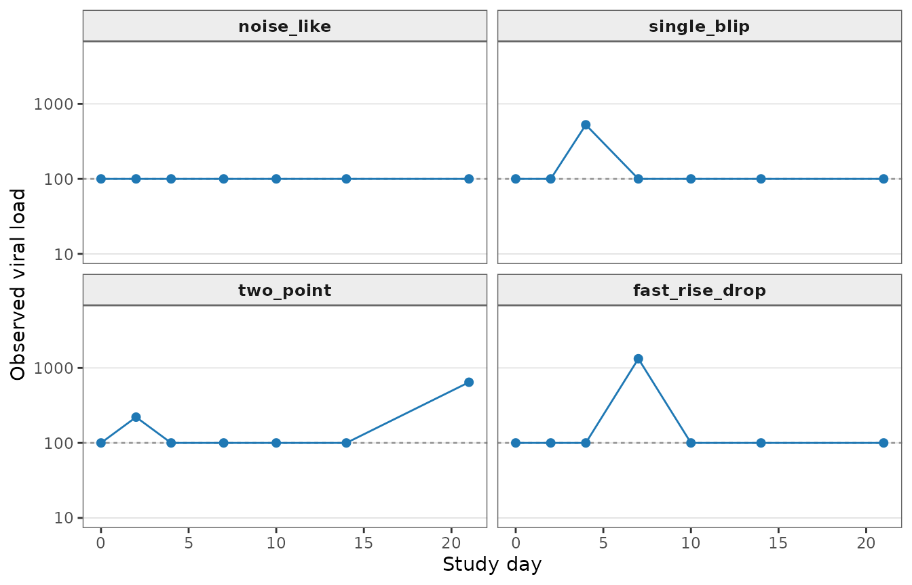
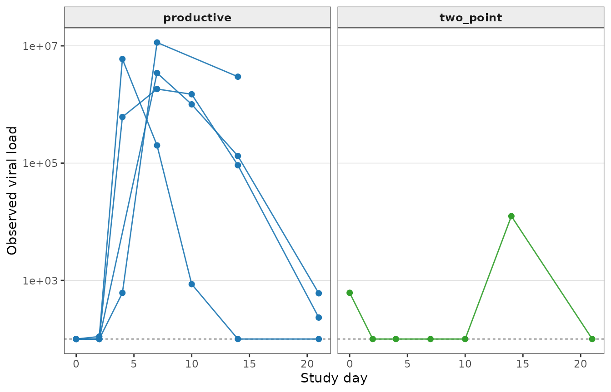
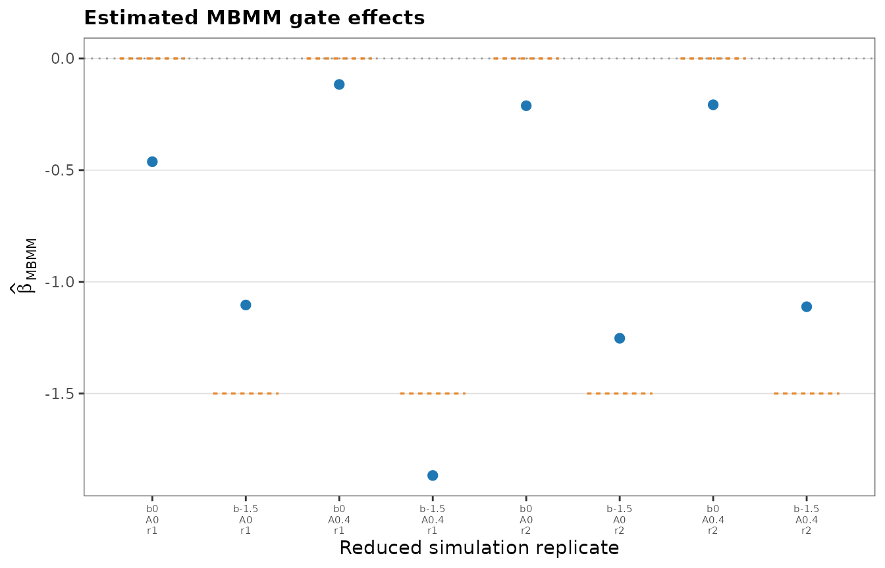
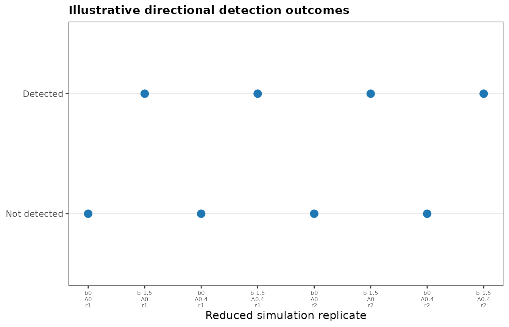
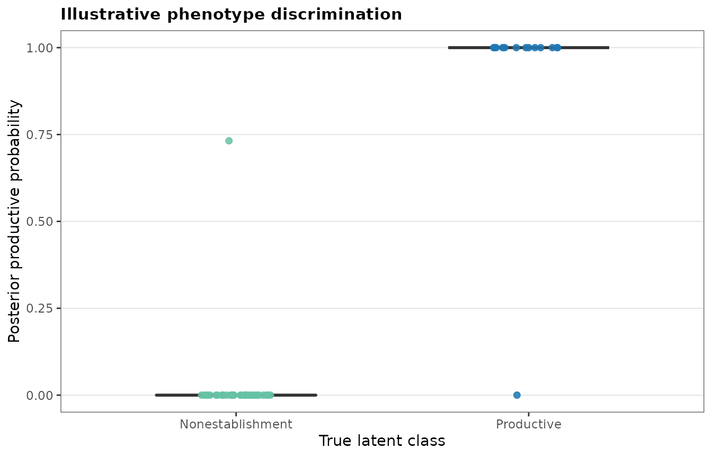

A reduced manuscript-style MBMM simulation
Source:vignettes/mbmm-simulation-demo.Rmd
mbmm-simulation-demo.RmdPurpose
This vignette provides a small, fully synthetic, end-to-end demonstration of the simulation structure used in the MBMM manuscript. It preserves the main scientific ingredients:
- a continuous baseline antibody biomarker;
- a biomarker-dependent latent productive-infection state;
- productive viral-load trajectories generated from an eclipse-phase ODE;
- nonestablishment trajectories that may contain transient or abortive detections;
- irregular observation schedules, an assay limit of detection, and censoring;
- MBMM fitting with a productive reference bank and an analytic nonestablishment model.
This is not a full reproduction of the manuscript simulation study. To keep package installation and checking practical, the vignette uses:
- fully synthetic antibody values;
- synthetic visit schedules;
- one small fixed productive reference bank;
- a reduced scenario grid;
- two illustrative replicates per scenario;
- asymptotic likelihood-ratio inference rather than permutation inference;
- MBMM and simple logistic summaries only.
The full manuscript study used empirically calibrated biomarker and visit distributions, a larger posterior bank, a substantially larger grid, comparator methods, permutation inference, and many Monte Carlo replicates. Therefore, the proportions shown below are illustrative run summaries, not estimates of power or type-I error.
Simulation ingredients
Synthetic baseline antibody
The public demonstration uses a bounded two-component Gaussian mixture on the natural-log scale. It produces a broad, right-skewed antibody distribution on the natural scale without including participant-level biomarker values.
set.seed(101)
antibody_demo <- mbmm_simulate_demo_antibody(
n = 500,
seed = 101
)
summary(
antibody_demo[, c(
"antibody",
"log_antibody",
"z_antibody"
)]
)
#> antibody log_antibody z_antibody
#> Min. : 1.000 Min. :0.000 Min. :-2.2426
#> 1st Qu.: 2.747 1st Qu.:1.011 1st Qu.:-0.7265
#> Median : 4.135 Median :1.420 Median :-0.1130
#> Mean : 5.544 Mean :1.495 Mean : 0.0000
#> 3rd Qu.: 7.591 3rd Qu.:2.027 3rd Qu.: 0.7981
#> Max. :23.310 Max. :3.149 Max. : 2.4812
ggplot2::ggplot(
antibody_demo,
ggplot2::aes(x = antibody)
) +
ggplot2::geom_histogram(
bins = 30,
fill = mbmm_palette[2],
color = "white",
linewidth = 0.2
) +
ggplot2::labs(
title = "Fully synthetic baseline antibody",
x = "Antibody value (natural scale)",
y = "Count"
) +
theme_mbmm()
Productive-infection gate
For subject , the latent productive-infection state is
where is standardized baseline antibody. Negative represents a protective association. The simulation calibrates so that the mean productive-infection probability across the realized synthetic biomarker distribution equals the requested target prevalence.
Transient and abortive patterns
A nonproductive subject may have one of four patterns:
-
noise_like: no intended signal above the LOD; -
single_blip: one intended detectable visit; -
two_point: two intended near-LOD detections; -
fast_rise_drop: one higher isolated peak with neighboring visits remaining near background.
visit_days <- mbmm_demo_visit_schedules()[["complete"]]
abortive_examples <- do.call(
rbind,
lapply(
c(
"noise_like",
"single_blip",
"two_point",
"fast_rise_drop"
),
function(type) {
x <- mbmm_simulate_abortive_pattern(
times = visit_days,
lod = 100,
sigma_obs = 0.30,
subtype = type,
seed = match(
type,
c(
"noise_like",
"single_blip",
"two_point",
"fast_rise_drop"
)
) + 200
)
x$pattern <- type
x
}
)
)
abortive_examples$pattern <- factor(
abortive_examples$pattern,
levels = c(
"noise_like",
"single_blip",
"two_point",
"fast_rise_drop"
)
)
abortive_plot_data <- abortive_examples
abortive_plot_data$y_plot <- pmax(abortive_plot_data$y, 1)
pattern_labels <- c(
noise_like = "noise_like",
single_blip = "single_blip",
two_point = "two_point",
fast_rise_drop = "fast_rise_drop"
)
lod_lines <- stats::aggregate(
lod ~ pattern,
data = abortive_plot_data,
FUN = unique
)
ggplot2::ggplot(
abortive_plot_data,
ggplot2::aes(x = time, y = y_plot)
) +
ggplot2::geom_hline(
data = lod_lines,
ggplot2::aes(yintercept = lod),
linetype = mbmm_lod_linetype,
color = mbmm_palette[7]
) +
ggplot2::geom_line(color = mbmm_palette[2], linewidth = 0.5) +
ggplot2::geom_point(color = mbmm_palette[2], size = 1.8) +
ggplot2::scale_y_log10(limits = c(10, 5000)) +
ggplot2::facet_wrap(
~pattern,
labeller = ggplot2::as_labeller(pattern_labels)
) +
ggplot2::labs(
x = "Study day",
y = "Observed viral load"
) +
theme_mbmm()
Build one small productive reference bank
The manuscript simulation reused a fixed productive reference bank. We follow the same structure here, but build a much smaller public bank from one synthetic reference cohort.
The ABC settings below are intentionally modest. They are suitable for a vignette demonstration, not for a substantive analysis.
reference_demo <- mbmm_simulate_manuscript_demo(
n_subjects = 45,
prevalence = 0.40,
beta_true = 0,
p_abortive = 0,
n_bank_donors = 8,
sigma_obs = 0.40,
lod = 100,
seed = 20260720
)
reference_ids <- reference_demo$subject_data$id[
reference_demo$subject_data$bank_eligible
]
length(reference_ids)
#> [1] 8
abc_particles <- mbmm_abc_bank(
obs_list = reference_demo$obs_list[reference_ids],
simulate_fn = mbmm_example_eclipse_simulate,
prior_sample_fn = mbmm_example_eclipse_prior,
n_draws = 400,
n_keep = 40,
seed = 20260721,
verbose = FALSE
)
pooled_productive <- mbmm_pool_bank(
particles = abc_particles,
seed = 20260722
)
prediction_times <- sort(
unique(
unlist(
mbmm_demo_visit_schedules(),
use.names = FALSE
)
)
)
productive_bank <- mbmm_predict_bank(
bank = pooled_productive,
simulate_fn = mbmm_example_eclipse_simulate,
times = prediction_times
)Reduced scenario grid
The demonstration uses:
- ;
- target productive prevalence ;
- ;
- abortive-event probability ;
- two replicates per setting.
scenario_grid <- mbmm_demo_scenario_grid(
replicates = 2,
n_subjects = 50,
prevalence = 0.30,
beta_grid = c(0, -1.5),
p_abortive_grid = c(0, 0.40),
base_seed = 20260724
)
scenario_grid
#> n_subjects prevalence beta_true p_abortive replicate scenario
#> 1 50 0.3 0.0 0.0 1 beta=0; abortive=0
#> 2 50 0.3 -1.5 0.0 1 beta=-1.5; abortive=0
#> 3 50 0.3 0.0 0.4 1 beta=0; abortive=0.4
#> 4 50 0.3 -1.5 0.4 1 beta=-1.5; abortive=0.4
#> 5 50 0.3 0.0 0.0 2 beta=0; abortive=0
#> 6 50 0.3 -1.5 0.0 2 beta=-1.5; abortive=0
#> 7 50 0.3 0.0 0.4 2 beta=0; abortive=0.4
#> 8 50 0.3 -1.5 0.4 2 beta=-1.5; abortive=0.4
#> seed
#> 1 20260724
#> 2 20260725
#> 3 20260726
#> 4 20260727
#> 5 20260728
#> 6 20260729
#> 7 20260730
#> 8 20260731Run the reduced experiment
The helpers below extract coefficients and compute a simple AUC against the known latent state. Truth is used only for evaluating the simulation; it is not provided to the MBMM fitting functions.
extract_glm <- function(data, outcome) {
y <- as.integer(data[[outcome]])
if (length(unique(y)) < 2L) {
return(
c(
beta = NA_real_,
p_value = NA_real_
)
)
}
fit <- suppressWarnings(
stats::glm(
y ~ baseline_antibody,
data = data,
family = stats::binomial()
)
)
tab <- summary(fit)$coefficients
c(
beta = unname(tab["baseline_antibody", "Estimate"]),
p_value = unname(tab["baseline_antibody", "Pr(>|z|)"])
)
}
auc_binary <- function(score, truth) {
truth <- as.integer(truth)
n1 <- sum(truth == 1L)
n0 <- sum(truth == 0L)
if (
n1 == 0L ||
n0 == 0L ||
length(score) != length(truth) ||
any(!is.finite(score))
) {
return(NA_real_)
}
ranks <- rank(score)
(
sum(ranks[truth == 1L]) -
n1 * (n1 + 1) / 2
) / (n1 * n0)
}
extract_gate_beta <- function(gate, term = "baseline_antibody") {
row <- gate$coef[
gate$coef$term == term,
,
drop = FALSE
]
if (nrow(row) != 1L) {
return(NA_real_)
}
as.numeric(row$estimate)
}
simulation_runs <- mbmm_run_simulation_grid(
grid = scenario_grid,
productive_bank = productive_bank,
n_cores = 1
)
simulation_results <- do.call(
rbind,
lapply(
simulation_runs,
function(x) {
fit <- x$fit
demo <- x$demo
setting <- x$setting
oracle <- extract_glm(
demo$subject_data,
outcome = "productive_true"
)
logistic_any <- extract_glm(
demo$subject_data,
outcome = "any_detect"
)
logistic_two <- extract_glm(
demo$subject_data,
outcome = "two_detect"
)
posterior <- merge(
fit$gate$posterior,
demo$subject_data[
,
c(
"id",
"productive_true",
"true_class"
)
],
by = "id",
all.x = TRUE,
sort = FALSE
)
beta_mbmm <- extract_gate_beta(
fit$gate
)
data.frame(
scenario = setting$scenario,
replicate = setting$replicate,
seed = setting$seed,
n_subjects = setting$n_subjects,
prevalence = setting$prevalence,
beta_true = setting$beta_true,
p_abortive = setting$p_abortive,
n_productive = sum(
demo$subject_data$productive_true
),
realized_productive_fraction = mean(
demo$subject_data$productive_true
),
observed_any_detect_fraction = mean(
demo$subject_data$any_detect
),
observed_two_detect_fraction = mean(
demo$subject_data$two_detect
),
beta_oracle = unname(
oracle["beta"]
),
p_oracle = unname(
oracle["p_value"]
),
beta_logistic_any = unname(
logistic_any["beta"]
),
p_logistic_any = unname(
logistic_any["p_value"]
),
beta_logistic_two = unname(
logistic_two["beta"]
),
p_logistic_two = unname(
logistic_two["p_value"]
),
beta_mbmm = beta_mbmm,
lrt_mbmm = as.numeric(
fit$gate$LRT
),
p_mbmm = as.numeric(
fit$gate$p_value
),
sig_mbmm =
is.finite(fit$gate$p_value) &&
fit$gate$p_value < 0.05 &&
is.finite(beta_mbmm) &&
beta_mbmm < 0,
auc_mbmm = auc_binary(
posterior$posterior_productive,
posterior$productive_true
),
optimizer_ok =
identical(
fit$gate$convergence_full,
0L
) &&
identical(
fit$gate$convergence_null,
0L
),
stringsAsFactors = FALSE
)
}
)
)
rownames(simulation_results) <- NULL
example_fits <- lapply(
simulation_runs,
function(x) {
posterior <- merge(
x$fit$gate$posterior,
x$demo$subject_data[
,
c(
"id",
"productive_true",
"true_class"
)
],
by = "id",
all.x = TRUE,
sort = FALSE
)
list(
setting = x$setting,
demo = x$demo,
fit = x$fit,
posterior = posterior
)
}
)
simulation_results
#> scenario replicate seed n_subjects prevalence beta_true
#> 1 beta=0; abortive=0 1 20260724 50 0.3 0.0
#> 2 beta=-1.5; abortive=0 1 20260725 50 0.3 -1.5
#> 3 beta=0; abortive=0.4 1 20260726 50 0.3 0.0
#> 4 beta=-1.5; abortive=0.4 1 20260727 50 0.3 -1.5
#> 5 beta=0; abortive=0 2 20260728 50 0.3 0.0
#> 6 beta=-1.5; abortive=0 2 20260729 50 0.3 -1.5
#> 7 beta=0; abortive=0.4 2 20260730 50 0.3 0.0
#> 8 beta=-1.5; abortive=0.4 2 20260731 50 0.3 -1.5
#> p_abortive n_productive realized_productive_fraction
#> 1 0.0 18 0.36
#> 2 0.0 13 0.26
#> 3 0.4 13 0.26
#> 4 0.4 14 0.28
#> 5 0.0 9 0.18
#> 6 0.0 14 0.28
#> 7 0.4 14 0.28
#> 8 0.4 16 0.32
#> observed_any_detect_fraction observed_two_detect_fraction beta_oracle
#> 1 0.48 0.34 -0.4564197
#> 2 0.36 0.26 -1.1036590
#> 3 0.48 0.36 -0.1163806
#> 4 0.48 0.36 -2.6632927
#> 5 0.28 0.18 -0.4678926
#> 6 0.34 0.24 -1.2424223
#> 7 0.62 0.34 -0.2074081
#> 8 0.52 0.36 -1.2125405
#> p_oracle beta_logistic_any p_logistic_any beta_logistic_two
#> 1 0.1446159346 -0.2347796 0.418927651 -0.49827953
#> 2 0.0105232252 -0.7517430 0.029010457 -1.10365899
#> 3 0.7239473393 -0.2304127 0.427670598 -0.05097333
#> 4 0.0009930458 -1.0381037 0.007307308 -1.53667148
#> 5 0.2325487711 -0.6016627 0.085267022 -0.46789255
#> 6 0.0038433740 -1.3089872 0.001652013 -1.30928097
#> 7 0.5219066114 0.6944448 0.041182984 0.45806542
#> 8 0.0038841025 -0.7049039 0.033355559 -0.96363239
#> p_logistic_two beta_mbmm lrt_mbmm p_mbmm sig_mbmm auc_mbmm
#> 1 0.118996610 -0.4621338 2.2876241 1.304094e-01 FALSE 1.0000000
#> 2 0.010523225 -1.1036387 8.5537205 3.448168e-03 TRUE 1.0000000
#> 3 0.864387515 -0.1163644 0.1258456 7.227789e-01 FALSE 1.0000000
#> 4 0.002136126 -1.8668765 17.5136758 2.852485e-05 TRUE 0.9960317
#> 5 0.232548771 -0.2115440 0.2850289 5.934239e-01 FALSE 1.0000000
#> 6 0.005034332 -1.2526364 10.8538290 9.859169e-04 TRUE 0.9543651
#> 7 0.149614004 -0.2074060 0.4166568 5.186100e-01 FALSE 1.0000000
#> 8 0.009521418 -1.1114412 9.8747350 1.675637e-03 TRUE 1.0000000
#> optimizer_ok
#> 1 TRUE
#> 2 TRUE
#> 3 TRUE
#> 4 TRUE
#> 5 TRUE
#> 6 TRUE
#> 7 TRUE
#> 8 TRUE
parallel_runs <- mbmm_run_simulation_grid(
grid = scenario_grid,
productive_bank = productive_bank,
n_cores = 2
)Scenario summaries
With only two replicates per setting, the detection proportion below should not be interpreted as statistical power.
split_results <- split(
simulation_results,
interaction(
simulation_results$beta_true,
simulation_results$p_abortive,
drop = TRUE
)
)
scenario_summary <- do.call(
rbind,
lapply(
split_results,
function(x) {
data.frame(
beta_true = unique(x$beta_true),
p_abortive = unique(x$p_abortive),
replicates = nrow(x),
mean_beta_mbmm = mean(
x$beta_mbmm,
na.rm = TRUE
),
mean_beta_bias = mean(
x$beta_mbmm - x$beta_true,
na.rm = TRUE
),
illustrative_detection_fraction = mean(
x$sig_mbmm,
na.rm = TRUE
),
mean_auc_mbmm = mean(
x$auc_mbmm,
na.rm = TRUE
),
optimizer_success_fraction = mean(
x$optimizer_ok,
na.rm = TRUE
),
stringsAsFactors = FALSE
)
}
)
)
rownames(scenario_summary) <- NULL
scenario_summary
#> beta_true p_abortive replicates mean_beta_mbmm mean_beta_bias
#> 1 -1.5 0.0 2 -1.1781375 0.32186246
#> 2 0.0 0.0 2 -0.3368389 -0.33683888
#> 3 -1.5 0.4 2 -1.4891589 0.01084112
#> 4 0.0 0.4 2 -0.1618852 -0.16188516
#> illustrative_detection_fraction mean_auc_mbmm optimizer_success_fraction
#> 1 1 0.9771825 1
#> 2 0 1.0000000 1
#> 3 1 0.9980159 1
#> 4 0 1.0000000 1Manuscript-style figures
Example productive and transient/abortive trajectories
The figure below displays one simulated dataset from the protective, high-abortive setting. Curves are grouped by the known generating phenotype for illustration.
example_index <- which(
scenario_grid$beta_true == -1.5 &
scenario_grid$p_abortive == 0.40 &
scenario_grid$replicate == 1
)[1]
trajectory_demo <- example_fits[[example_index]]$demo
selected_ids <- c(
head(
trajectory_demo$subject_data$id[
trajectory_demo$subject_data$true_class == "productive"
],
4
),
head(
trajectory_demo$subject_data$id[
trajectory_demo$subject_data$abortive_subtype == "single_blip"
],
2
),
head(
trajectory_demo$subject_data$id[
trajectory_demo$subject_data$abortive_subtype == "two_point"
],
2
),
head(
trajectory_demo$subject_data$id[
trajectory_demo$subject_data$abortive_subtype == "fast_rise_drop"
],
2
)
)
trajectory_plot_data <- merge(
trajectory_demo$observations[
trajectory_demo$observations$id %in% selected_ids,
,
drop = FALSE
],
trajectory_demo$subject_data[
,
c(
"id",
"true_class",
"abortive_subtype"
)
],
by = "id",
all.x = TRUE
)
trajectory_plot_data$display_class <- ifelse(
trajectory_plot_data$true_class == "productive",
"productive",
trajectory_plot_data$abortive_subtype
)
trajectory_plot_data$y_plot <- pmax(trajectory_plot_data$y, 1)
trajectory_plot_data$id <- factor(trajectory_plot_data$id)
class_colors <- stats::setNames(
mbmm_palette[c(2, 5, 4, 3)],
c("productive", "single_blip", "two_point", "fast_rise_drop")
)
lod_lines_traj <- stats::aggregate(
lod ~ display_class,
data = trajectory_plot_data,
FUN = function(x) unique(x)[1]
)
ggplot2::ggplot(
trajectory_plot_data,
ggplot2::aes(x = time, y = y_plot, group = id)
) +
ggplot2::geom_hline(
data = lod_lines_traj,
ggplot2::aes(yintercept = lod),
linetype = mbmm_lod_linetype,
color = mbmm_palette[7]
) +
ggplot2::geom_line(
ggplot2::aes(color = display_class),
linewidth = 0.5,
alpha = 0.9
) +
ggplot2::geom_point(
ggplot2::aes(color = display_class),
size = 1.8
) +
ggplot2::scale_y_log10() +
ggplot2::scale_color_manual(values = class_colors, guide = "none") +
ggplot2::facet_wrap(~display_class, ncol = 2) +
ggplot2::labs(
x = "Study day",
y = "Observed viral load"
) +
theme_mbmm()
Estimated gate effects
Each point represents one reduced simulation replicate. Horizontal segments show the true generating effect for each setting.
effect_plot_data <- simulation_results
effect_plot_data$replicate_index <- seq_len(nrow(effect_plot_data))
effect_plot_data$x_label <- paste0(
"b", effect_plot_data$beta_true,
"\nA", effect_plot_data$p_abortive,
"\nr", effect_plot_data$replicate
)
ggplot2::ggplot(
effect_plot_data,
ggplot2::aes(x = replicate_index, y = beta_mbmm)
) +
ggplot2::geom_hline(
yintercept = 0,
linetype = "13",
color = mbmm_palette[7]
) +
ggplot2::geom_segment(
ggplot2::aes(
x = replicate_index - 0.35,
xend = replicate_index + 0.35,
y = beta_true,
yend = beta_true
),
linetype = mbmm_lod_linetype,
color = mbmm_palette[3],
linewidth = 0.6
) +
ggplot2::geom_point(color = mbmm_palette[2], size = 2.2) +
ggplot2::scale_x_continuous(
breaks = effect_plot_data$replicate_index,
labels = effect_plot_data$x_label
) +
ggplot2::labs(
title = "Estimated MBMM gate effects",
x = "Reduced simulation replicate",
y = expression(hat(beta)[MBMM])
) +
theme_mbmm() +
ggplot2::theme(
axis.text.x = ggplot2::element_text(size = ggplot2::rel(0.65))
)
Illustrative detection outcomes
Filled points indicate a directional MBMM result with and a negative estimated biomarker effect.
detection_plot_data <- simulation_results
detection_plot_data$replicate_index <- seq_len(nrow(detection_plot_data))
detection_plot_data$x_label <- paste0(
"b", detection_plot_data$beta_true,
"\nA", detection_plot_data$p_abortive,
"\nr", detection_plot_data$replicate
)
detection_plot_data$outcome <- factor(
ifelse(detection_plot_data$sig_mbmm, "Detected", "Not detected"),
levels = c("Not detected", "Detected")
)
ggplot2::ggplot(
detection_plot_data,
ggplot2::aes(x = replicate_index, y = outcome, shape = outcome)
) +
ggplot2::geom_point(
color = mbmm_palette[2],
fill = mbmm_palette[2],
size = 2.6,
stroke = 1
) +
ggplot2::scale_shape_manual(
values = c("Not detected" = 21, "Detected" = 19),
guide = "none"
) +
ggplot2::scale_x_continuous(
breaks = detection_plot_data$replicate_index,
labels = detection_plot_data$x_label
) +
ggplot2::labs(
title = "Illustrative directional detection outcomes",
x = "Reduced simulation replicate",
y = NULL
) +
theme_mbmm() +
ggplot2::theme(
axis.text.x = ggplot2::element_text(size = ggplot2::rel(0.65))
)
Posterior phenotype discrimination
For one illustrative protective, high-abortive dataset, the posterior productive probability is shown against the true latent class.
posterior_example <- example_fits[[example_index]]$posterior
posterior_example$true_class_label <- factor(
posterior_example$productive_true,
levels = c(0, 1),
labels = c("Nonestablishment", "Productive")
)
ggplot2::ggplot(
posterior_example,
ggplot2::aes(x = true_class_label, y = posterior_productive)
) +
ggplot2::geom_boxplot(
ggplot2::aes(fill = true_class_label),
outlier.shape = NA,
alpha = 0.35,
width = 0.55
) +
ggplot2::geom_jitter(
ggplot2::aes(color = true_class_label),
width = 0.12,
height = 0,
size = 1.8,
alpha = 0.85
) +
ggplot2::scale_fill_manual(
values = c(
"Nonestablishment" = mbmm_palette[6],
"Productive" = mbmm_palette[2]
),
guide = "none"
) +
ggplot2::scale_color_manual(
values = c(
"Nonestablishment" = mbmm_palette[6],
"Productive" = mbmm_palette[2]
),
guide = "none"
) +
ggplot2::labs(
title = "Illustrative phenotype discrimination",
x = "True latent class",
y = "Posterior productive probability"
) +
theme_mbmm()
Scaling toward the manuscript experiment
The following chunk is not evaluated. It illustrates the kinds of settings that must be increased for a larger reproduction. Replace the placeholder values with the exact manuscript and supplementary-code settings.
full_grid <- expand.grid(
n_subjects = c(25, 40, 50, 75, 100, 150, 200),
prevalence = c(0.20, 0.30),
beta_true = c(0, -0.5, -1.0, -1.5),
p_abortive = c(0, 0.20, 0.40),
replicate = seq_len(100)
)
# Increase these settings for a substantive analysis.
abc_n_draws <- 10000
abc_accept_fraction <- 0.025
n_permutations <- 199
# The full manuscript workflow additionally included comparator methods,
# checkpointing, parallel execution, and manuscript-specific summaries.A full reproduction should also restore:
- the empirically calibrated biomarker distribution, where permitted;
- the empirical visit-pattern distribution, where permitted;
- the full productive posterior bank;
- all sample-size, prevalence, effect-size, and abortive-event settings;
- the planned number of Monte Carlo replicates;
- permutation inference;
- the manuscript comparator methods;
- the exact manuscript figure-generation scripts.
Interpretation
This vignette is designed to verify the public package workflow and make the simulation architecture transparent. It demonstrates that MBMM can be run end-to-end when PCR-detectable transient or abortive events do not necessarily represent productive infection.
The numerical results from this small vignette should not be quoted as formal power, type-I error, or performance estimates.